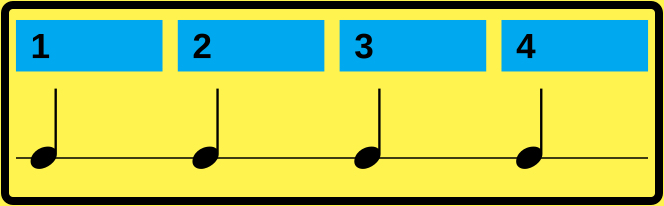

Dein Ziel
Am Ende dieses Kurses kannst du:
- verstehen, dass Musik in der Zeit stattfindet,
- einen gleichmäßigen Puls spüren und halten,
- Ganze, halbe, Viertel- und Achtelnoten sowie Pausen verstehen,
- den 4/4-Takt verstehen und zählen,
- das Gelernte lesen, hören, schreiben und spielen.
01 / Zeit & Puls
Musik findet in der Zeit statt
Anders als in einem Bild, in welchem alles sofort sichtbar ist, entfalten sich Ereignisse in der Musik nacheinander. Klänge beginnen, dauern eine bestimmte Zeit und enden.
Musik: sequenziellEreignisse entfalten sich nacheinander in der Zeit.
Bild: simultanDie visuellen Elemente sind gleichzeitig vorhanden und können grundsätzlich auf einmal erfasst werden.
Rhythmus gestaltet Zeit
Für Rhythmus interessiert uns zunächst nicht, wie hoch ein Ton ist, sondern wann etwas passiert und wie lange es dauert.
Wir brauchen einen gleichmäßigen Puls
Um Zeit musikalisch messbar zu machen, teilen wir sie in gleichmäßige Schläge ein. Wie das Ticken einer Uhr:
1 – 2 – 3 – 4 – 5 – 6 – 7 – 8 – …
Inneres Zeitgefühl
Ein Metronom kann uns einen gleichmäßigen Puls vorgeben. Unser Ziel ist jedoch nicht, nur auf einen äußeren, externen Klick zu reagieren.
Wir wollen lernen, diesen Puls selbst zu tragen.
Dafür verbinden wir den musikalischen Puls mit einer gleichmäßigen körperlichen Bewegung. Während dieses Kurses wird deshalb immer ein Körperteil die Zeit markieren.
Ich empfehle den Fuß.
Der Fuß wird zu unserem inneren Metronom.
02 / Notation & Takt
Rhythmische Notation
In der westlichen Musiknotation wird die Dauer von Tönen durch verschiedene Notenwerte dargestellt.
Schläge werden zu Takten gruppiert
Damit wir nicht endlos weiterzählen, fassen wir eine bestimmte Anzahl von Schlägen zu wiederkehrenden Gruppen zusammen. Eine solche Gruppe heißt Takt.
Der 4/4-Takt
Die häufigste Gruppierung besteht aus vier Schlägen:
| 1 2 3 4 | 1 2 3 4 |
- 4
- Wie viele Schläge gehören zu einem Takt? Vier Schläge.
- /4
- Welcher Notenwert dient als Zählzeit? Die Viertelnote.

03 / Die Notenwerte
Jetzt erst kommen die Notenwerte
In der westlichen Musiknotation verwenden wir verschiedene Notenwerte, um die Dauer eines Tons darzustellen.
Im 4/4-Takt lernen wir zunächst vier davon kennen: ganze, halbe, Viertel- und Achtelnoten.
Die ganze Note
Die ganze Note dauert 4 Schläge. Man braucht also nur eine einzige ganze Note, um einen 4/4-Takt zu füllen.

Die halbe Note
Die halbe Note dauert 2 Schläge, also füllt sie in einem 4/4-Takt den halben Takt. Man braucht also zwei halbe Noten, um einen Takt zu füllen.

Die Viertelnote
Die Viertelnote dauert 1 Schlag, also füllt sie in einem 4/4-Takt ein Viertel des Taktes. Man braucht also vier davon, um einen 4/4-Takt zu füllen.

Die Achtelnote
Die Achtelnote dauert einen halben Schlag. Sie füllt in einem 4/4-Takt ein Achtel des Taktes. Man braucht also acht davon, um einen Takt zu füllen.

04 / Die Pausenzeichen
Für Stille brauchen wir Pausenzeichen
Auch Stille nimmt Zeit ein. Deshalb gibt es zu jedem Notenwert eine entsprechende Pause.
Tippe auf eine Abbildung, um sie zu vergrößern. Die Grafiken bleiben auch beim Zoomen scharf.
Ganze Note & ganze Pause 4 Schläge
Halbe Note & halbe Pause 2 Schläge

Achtelnote & Achtelpause ½ Schlag

Du hast Puls, Takt, Notenwerte und Pausenzeichen kennengelernt. Kehre zu einem Abschnitt zurück, wenn du etwas noch einmal nachlesen möchtest.
Rhythmus Kurs 1 / Kapitel 02
Die Notenwerte.
Dein Fuß hält den Puls. Jetzt kommen die Hände dazu: Lies, klatsche, höre und schreibe ganze, halbe, Viertel- und Achtelnoten.
Kapitel 2 als PDF herunterladen ↓Zum Einstieg
Der Puls bleibt. Die Notenwerte wechseln.
Nachdem du im ersten Kapitel gelernt hast, einen gleichmäßigen Puls zu halten, fügen wir nun unterschiedliche Notenwerte hinzu.
Wenn wir klatschen, können wir Notenlängen nicht genau darstellen, da wir nur ein kurzes Geräusch machen. Daher wird danach gehalten. Jede Note beschreibt, wie lange ein Ton dauert.
Der Puls deines Fußes bleibt dabei immer gleich.
Der Fuß trägt weiterhin die Zeit.
Deine Hände klatschen die Notenwerte und machen ihre Dauer spürbar.
Lernziele
Nach diesem Kapitel kannst du:
- Ganze, halbe, Viertel- und Achtelnoten erkennen.
- Die Dauer jeder Note erklären.
- Notenwerte im 4/4-Takt lesen.
- Notenwerte mit Fuß, Stimme und Klatschen korrekt ausführen.
- Einfache Rhythmen ohne Pausen vom Blatt lesen.
- Vollständige 4/4-Takte mit Notenwerten schreiben.
Aufbau der Lektionen
Jede Lektion folgt dem gleichen Ablauf:
- Erklärung
- Körperübung
- Mitspiel-MP3
- Leseübung
- Höraufgabe
Lektion 01 / Ganze Note
Vier Schläge. Eine Note.
1. Erklärung
Eine ganze Note dauert vier Schläge.
2. Körperübung
Stelle das Metronom auf 50 BPM. Tritt mit dem Fuß auf jeden Schlag. Zähle laut:
Testkopie · Klatschbewegung
Klatsche dann auf die 1 und halte danach die Schläge 2, 3 und 4. Es hilft, wenn du die Schläge 2, 3 und 4 durch eine leichte Bewegung deiner haltenden Hände markierst.
3. Mitspiel-MP3
Spiele die MP3 „Mitspielübung Rhythmus Kurs 1 Kapitel 2 Lektion 1“ ab.
Stampfe mit dem Fuß die Schläge 1, 2, 3, 4. Zähle laut 1, 2, 3, 4. Klatsche auf die 1 und halte auch die Schläge 2, 3 und 4, wie in der Körperübung zuvor.
Achte dabei auf das Metronom, um dein inneres Zeitgefühl zu schärfen. Versuche nicht, auf das Metronom zu reagieren oder es vorauszusehen, sondern dein Stampfen immer gleichmäßiger zu machen.
4. Leseübung
Lies die Takte. Stampfe den Puls. Zähle laut. Klatsche den Rhythmus.

Lektion 02 / Halbe Note
Zwei Schläge pro Note.
1. Erklärung
Eine halbe Note dauert zwei Schläge. Im 4/4-Takt passen zwei halbe Noten in einen Takt.
2. Körperübung
Dein Fuß markiert 1, 2, 3, 4. Klatsche auf 1 und 3.
3. Mitspiel-MP3
Spiele die MP3 „Mitspielübung Rhythmus Kurs 1 Kapitel 2 Lektion 2“ ab.
Stampfe mit dem Fuß die Schläge 1, 2, 3, 4. Zähle laut 1, 2, 3, 4. Klatsche auf die 1 und halte auch Schlag 2. Klatsche dann Schlag 3 und halte auch Schlag 4.
Achte dabei auf das Metronom, um dein inneres Zeitgefühl zu schärfen. Versuche nicht, auf das Metronom zu reagieren oder es vorauszusehen, sondern dein Stampfen immer gleichmäßiger zu machen.
4. Leseübung
Nutze die Übung „Leseübung Rhythmus Kurs 1 Kapitel 2 Lektion 2 Ganze und Halbe“.
Mache dich mit den Takten vertraut. Du kannst es am Stück versuchen oder je einen Takt bearbeiten.
Zähle dann laut 1, 2, 3, 4 und beginne, auf jedem Schlag zu stampfen. Wenn du bereit bist, beginne, die vorgegebenen Noten zu klatschen und zu halten.
Nutze, sobald du fertig bist, „Lösung Rhythmus Kurs 1 Kapitel 2 Lektion 2 Leseaufgabe“, um zu überprüfen, ob du es richtig gemacht hast.
Lösung zur Leseübung anzeigen
5. Höraufgabe
Nutze nun die drei Höraufgaben für Lektion 2, um dein Gehör zu verbessern.
Spiele die Datei ab und stampfe mit dem Fuß das Metronom mit. Zähle währenddessen die erklingenden Noten und deren Dauer.
Für Höraufgabe 1 und 2 erklingen jeweils für einen Takt Noten; dann gibt es einen Takt Pause zum Denken. In Höraufgabe 3 wird vier Takte lang durchgespielt.
Schreibe auf einem Blatt Papier auf, was du gehört hast, und vergleiche es mit den Lösungen zu den Höraufgaben.
Höraufgabe 1
Lösung 1 anzeigen
Höraufgabe 2
Lösung 2 anzeigen
Höraufgabe 3
Lösung 3 anzeigen
Lektion 03 / Viertelnote
Ein Schlag pro Note.
1. Erklärung
Eine Viertelnote dauert einen Schlag.
2. Körperübung
Dein Fuß markiert 1, 2, 3, 4. Klatsche auf jeden Schlag.
3. Mitspiel-MP3
Nutze die Übung „Rhythmus Kurs 1 Kapitel 2 Lektion 3 Mitspielübung“. Es wird auf jeden Schlag eine Viertelnote geklatscht. Achte weiterhin darauf, dass dein Fuß sich gleichmäßig bewegt.
4. Leseübung
Öffne die Übung „Rhythmus Kurs 1 Kapitel 2 Lektion 3 Leseübung“ und mache dich mit den Takten vertraut.
Spiele dann wie zuvor schon die Takte, indem du mit dem Fuß stampfst und dabei klatschst.

Kontrolliere dann mit der MP3-Lösung, ob du jeden Takt korrekt ausgeführt hast.
Lösung zur Leseübung anzeigen
5. Höraufgabe
Für diese Lektion gibt es drei Höraufgaben. Es kommen ganze, halbe und Viertelnoten vor.
Höre dir die MP3-Dateien an und transkribiere die Takte. Kontrolliere mit den Lösungsblättern, ob du die Aufgaben richtig gelöst hast.
Tipp: Es ist besser, nur eine Aufgabe oder sogar nur einen Takt mit höchster Hingabe und Konzentration zu bearbeiten, als alle Aufgaben auf einmal zu machen und nicht bei der Sache zu sein.
Höraufgabe 1
Lösung 1 anzeigen

Höraufgabe 2
Lösung 2 anzeigen

Höraufgabe 3
Lösung 3 anzeigen

Lektion 04 / Achtelnoten
Zwei Noten pro Schlag.
1. Erklärung
Eine Achtelnote dauert einen halben Schlag. Ein 4/4-Takt hat also acht dieser Noten. Wir zählen jetzt:
1 & 2 & 3 & 4 &
Der Fuß bleibt unverändert.
2. Körperübung
Dein Fuß bewegt sich abwechselnd nach unten und oben. Klatsche auf jeder Zahl und jedem „&“.
3. Mitspiel-MP3
Es wird zunächst durch das Metronom ein Takt eingezählt. Dann werden die Achtel gespielt. Dann setzen die Achtel jeweils einen Takt aus. Versuche, das Muster weiterzuspielen, auch wenn die Achtel nicht vorgegeben sind.
Mitspielübung 1 · Jede Achtelposition
In der ersten Mitspielübung spielen wir jede Achtelnote im Takt, also jede Achtelposition.

Mitspielübung 2 · Nur die „&“-Zählzeiten
In der zweiten Mitspielübung spielen wir nur die „&“-Zählzeiten. Achte darauf, wie sprunghaft diese sich anfühlen!
1 & 2 & 3 & 4 &
![Takt 1: ganze Pause. Takt 2: Achtelpause, Achtelnote, Achtelpause, Achtelnote, Achtelpause, Achtelnote, Achtelpause, Achtelnote. Takt 3: ganze Pause. Takt 4: Achtelpause, Achtelnote, Achtelpause, Achtelnote, Achtelpause, Achtelnote, Achtelpause, Achtelnote. Takt 5: ganze Pause. Takt 6: Achtelpause, Achtelnote, Achtelpause, Achtelnote, Achtelpause, Achtelnote, Achtelpause, Achtelnote. Takt 7: ganze Pause. Takt 8: Achtelpause, Achtelnote, Achtelpause, Achtelnote, Achtelpause, Achtelnote, Achtelpause, Achtelnote](assets/kapitel-2/noten-115.svg)
4. Leseübung
Rhythmen lesen. Zählen. Stampfen. Klatschen. Lösung prüfen.
Leseübung 1

Lösung 1 zur Leseübung anzeigen
Leseübung 2

Lösung 2 zur Leseübung anzeigen
5. Höraufgabe
Da das Heraushören und Transkribieren von Achtelnoten eine echte Herausforderung darstellt, sind die Höraufgaben jetzt kürzer. Der herauszuhörende Takt wird viermal wiederholt.
Höraufgabe 1
Lösung 1 anzeigen

Höraufgabe 2
Lösung 2 anzeigen

Höraufgabe 3
Lösung 3 anzeigen
Höraufgabe 4
Lösung 4 anzeigen

Lektion 05 / Gemischte Notenwerte
Jetzt kommt alles zusammen.
Jetzt kombinieren wir alle bisher gelernten Notenwerte.
Es kommen noch keine Pausen vor.
Aufgabe 1 · Takte vervollständigen
Ergänze die fehlenden Notenwerte. Es gibt meistens mehrere richtige Lösungen.
![Takt 1: Note (1 Schläge), Note (0.5 Schläge), Note (0.5 Schläge), Lücke, Note (0.5 Schläge), Note (0.5 Schläge). Takt 2: Lücke, Note (0.5 Schläge), Note (0.5 Schläge), Note (0.5 Schläge), Note (0.5 Schläge), Lücke, Note (0.5 Schläge). Takt 3: Lücke, Note (0.5 Schläge), Note (0.5 Schläge), Note (0.5 Schläge), Note (0.5 Schläge), Note (0.5 Schläge). Takt 4: Lücke, Note (1 Schläge), Note (0.5 Schläge), Note (0.5 Schläge). Takt 5: Note (0.5 Schläge), Note (0.5 Schläge), Lücke, Note (0.5 Schläge), Note (0.5 Schläge), Note (0.5 Schläge). Takt 6: Lücke. Takt 7: Note (2 Schläge), Note (1 Schläge), Note (1 Schläge). Takt 8: Note (1 Schläge), Lücke](assets/kapitel-2/bild-160-interaktiv.svg)
Aufgabe 2 · Finde den Fehler im Takt
Öffne die MP3-Datei. Derselbe Takt wird viermal wiederholt. Es ist immer ein Takt Pause dazwischen.
Vergleiche das, was du hörst, mit der Notation, finde den Fehler und korrigiere ihn. Kontrolliere danach mit der Lösung, ob du den Fehler korrekt identifiziert und korrigiert hast.
Aufgabe 1.1
Lösung 1 anzeigen

Aufgabe 2.1
Lösung 2 anzeigen
Aufgabe 3.1

Lösung 3 anzeigen

Aufgabe 3 · Eigene Takte schreiben
Schreibe vollständige 4/4-Takte. Verwende unterschiedliche Kombinationen.
Stampfe mit dem Fuß die Schläge und klatsche deine Noten deutlich. Spiele den Rhythmus dann auf deinem Instrument.
Weiter zu deinem Kapitelziel ↓Zum Abschluss
Reflexion
Das nehme ich mit:
Hake ab
Dein nächster Schritt
Aus Noten wird Rhythmus.
Nimm dir für jede Lektion so viel Zeit, wie du brauchst.
Weiter zu Kapitel 3 Noch einmal üben ↑← Zurück zu Kapitel 1Rhythmus Kurs 1 / Kapitel 03
Raum für Pausen.
Auch Stille gehört zum Rhythmus. Dein Fuß trägt den Puls weiter – du lernst, Pausen zu lesen, zu spüren und genau einzuhalten.
Kapitel 3 als PDF herunterladen ↓Zum Einstieg
Die zweite Hälfte des Rhythmus.
Im letzten Kapitel hast du gelernt, dass Noten unterschiedlich lange dauern können. Jetzt lernst du die zweite Hälfte des Rhythmus: Pausen.
Eine Pause bedeutet nicht, dass der Puls stoppt. Sie bedeutet lediglich, dass kein Ton erklingt.

Dein Fuß bewegt sich trotzdem weiter.
Du zählst weiter.
Nur das Klatschen setzt aus.
Lernziele
Nach diesem Kapitel kannst du:
- Ganze, halbe, Viertel- und Achtelpausen erkennen.
- Die Dauer jeder Pause erklären.
- Pausen sicher lesen.
- Rhythmen mit Noten und Pausen korrekt ausführen.
- Vollständige 4/4-Takte mit Noten und Pausen schreiben.
Aufbau jeder Lektion
Jede Lektion folgt dem gleichen Ablauf:
- Erklärung
- Körperübung, wenn angebracht
- Mitspiel-MP3, wenn angebracht
- Leseübung
- Höraufgabe
Audiodateien öffnen sich bei Google Drive in einem neuen Tab. Öffne die Lösungen erst, nachdem du selbst geübt hast.
Weiter zu Lektion 1 ↓Lektion 01 / Ganze Pause
Vier Schläge Stille.
1. Erklärung
Eine ganze Pause dauert vier Schläge. Während dieser Zeit wird nicht geklatscht.
2. Körperübung
Dein Fuß tritt auf jeden Schlag. Zähle:
1 – 2 – 3 – 4
Wir klatschen nicht, aber halten dafür die ganze Pause und spüren diese.
3. Leseübung
Rhythmen lesen. Zählen. Nur die Noten klatschen. Fühle die Pausen, indem du sie hältst.

Lösung zur Leseübung anzeigen
4. Höraufgaben
Es wird ein Takt durch das Metronom eingezählt. Dann beginnt die Höraufgabe. Notiere die Noten und Pausen, die du hörst, und kontrolliere dein Ergebnis mit dem Lösungsblatt.
Höraufgabe 1
Lösung 1 anzeigen

Höraufgabe 2
Lösung 2 anzeigen

Höraufgabe 3
Lösung 3 anzeigen

Höraufgabe 4
Lösung 4 anzeigen
Lektion 02 / Halbe Pause
Zwei Schläge Stille.
1. Erklärung
Eine halbe Pause dauert zwei Schläge.
2. Körperübung
Stampfe mit dem Fuß wie in den vorigen Kapiteln. Halte nun jeweils zwei Schläge lang eine aktive Pause. Das bedeutet, du konzentrierst dich darauf, jeweils zwei Schläge Stille zu spüren.
Spüre auch, wo die halbe Pause jeweils beginnt: in diesem Fall auf Schlag 1 und auf Schlag 3.
Stampfe: 1, 2, 3, 4. Klatsche nicht. Spüre:
1 2 | 3 4
3. Mitspiel-MP3
Höre dir die MP3 an und erkenne das Muster. Der Takt wird wiederholt. Sobald du das Muster erkannt hast, spiele mit. Wiederhole die Aufgabe so oft wie nötig, um den Rhythmus entspannt mitstampfen und mitklatschen zu können.
4. Leseübung
Rhythmen lesen und klatschen.
Lösung zur Leseübung anzeigen
5. Höraufgaben
Welche Notation hörst du? Schreibe sie auf und kontrolliere dann mit den Lösungsblättern.
Höraufgabe 1
Lösung 1 anzeigen

Höraufgabe 2
Lösung 2 anzeigen

Höraufgabe 3
Lösung 3 anzeigen
Lektion 03 / Viertelpause
Ein Schlag Stille.
1. Erklärung
Eine Viertelpause dauert einen Schlag. Der Puls läuft weiter.

2. Mitspiel-MP3
Höre dir die MP3-Dateien an und erkenne das Muster. Der Takt wird wiederholt. Sobald du das Muster erkannt hast, spiele mit. Wiederhole die Aufgabe so oft wie nötig, um den Rhythmus entspannt mitstampfen und mitklatschen zu können.
3. Leseübung
Rhythmen lesen. Klatschen.
Leseübung 1

Lösung zur Leseübung 1 anzeigen
Leseübung 2 · Versteckter Songrhythmus · LDDLM

Lösung zur Leseübung 2 anzeigen
4. Höraufgaben
Notiere, was du hörst. Verdecke die Lösung, bis du sie brauchst.
Höraufgabe 1
Lösung 1 anzeigen

Höraufgabe 2
Lösung 2 anzeigen

Höraufgabe 3
Lösung 3 anzeigen
Lektion 04 / Achtelpause
Ein halber Schlag Stille.
1. Erklärung
Eine Achtelpause dauert einen halben Schlag. Wir zählen:
1 & 2 & 3 & 4 &
2. Körperübung
Dein Fuß bewegt sich abwechselnd nach unten und oben. Zähle dabei 1 & 2 & 3 & 4 &.
Halte die Pausen mit geschlossenen Händen und spüre sie. Du kannst sie auch durch Schwingen der Hände markieren. Achte darauf, dich auf den „&“-Zählzeiten nach oben zu bewegen.
3. Leseübungen
Rhythmen lesen und klatschen. Lege nun besonderen Wert darauf, die Pausen aktiv zu spüren.
Leseübung 1

Lösung zur Leseübung 1 anzeigen
Leseübung 2

Lösung zur Leseübung 2 anzeigen
Leseübung 3

Lösung zur Leseübung 3 anzeigen
Leseübung 4
Diese Übung ist in der Vorlage noch nicht ausgefüllt. Fahre mit Leseübung 5 fort.
Leseübung 5

Lösung zur Leseübung 5 anzeigen
Leseübung 6 · Nirvana – CAYR

Lösung zur Leseübung 6 anzeigen
Leseübung 7 · Bob Marley – CYBL
Lösung zur Leseübung 7 anzeigen
4. Höraufgaben
Welche Notation hörst du? Schreibe sie auf.
Höraufgabe 1
Lösung 1 anzeigen

Höraufgabe 2
Lösung 2 anzeigen

Höraufgabe 3
Lösung 3 anzeigen

Lektion 05 / Gemischte Rhythmen mit Pausen
Klang und Stille verbinden.
Jetzt kombinieren wir:
Aufgabe 1 · Pausenlängen zuordnen
Diese Übung ist dazu da, dir die Notenwerte noch einmal bewusst zu machen. In den meisten Fällen würden wir beispielsweise eine ganze Pause nicht durch vier Viertelpausen ersetzen. Jetzt wollen wir allerdings testen, ob du weißt, welche Pause wie lang ist.
Wir sind im 4/4-Takt!
1. Wie viele Viertelpausen sind so lang wie eine ganze Pause?
Kontrolle anzeigen
4 Viertelpausen. 4 Schläge ÷ 1 = 4.
2. Wie viele Achtelpausen sind so lang wie zwei Viertelpausen?
Kontrolle anzeigen
4 Achtelpausen. 2 Schläge ÷ ½ = 4.
3. Wie viele Achtelpausen sind so lang wie drei Viertelpausen?
Kontrolle anzeigen
6 Achtelpausen. 3 Schläge ÷ ½ = 6.
4. Wie viele Achtelpausen sind so lang wie eine halbe Pause?
Kontrolle anzeigen
4 Achtelpausen. 2 Schläge ÷ ½ = 4.
5. Wie viele Viertelpausen sind so lang wie eine halbe Pause?
Kontrolle anzeigen
2 Viertelpausen. 2 Schläge ÷ 1 = 2.
Abschlussaufgabe 2 · Takte vervollständigen
Jetzt verwendest du Noten und Pausen gemeinsam. Jeder Takt muss genau vier Schläge enthalten.
Aufgabe 2.1

Aufgabe 2.2

Aufgabe 2.3

Aufgabe 3 · Finde den Fehler im Takt
Ergänze fehlende Noten oder Pausen. Mehrere Lösungen sind oft möglich.
Aufgabe 3.1

Lösung 3.1 anzeigen
Die Noten in diesem Takt ergeben einen 5/4-Takt. Es ist ein Schlag zu viel!
Aufgabe 3.2

Lösung 3.2 anzeigen
Statt der Viertelpause ist in der MP3 eine halbe Pause ab Schlag 2 zu hören.
Aufgabe 3.3

Lösung 3.3 anzeigen
In der MP3 sind nur drei Achtelnoten zu hören. Daher muss auf der Zählzeit 4& eine Achtelpause sein.
Aufgabe 4 · Eigene Takte schreiben
Schreibe vollständige 4/4-Takte. Nutze verschiedene Kombinationen.
Aufgabe 5 · Spiele deine Rhythmen
- Stampfe den Puls.
- Zähle laut.
- Klatsche nur die Noten.
- Halte jede Pause exakt ein.
- Spiele die Rhythmen anschließend auf deinem Instrument.
Zum Abschluss
Kapitelziel erreicht.
Du kannst jetzt:
Damit beherrschst du alle grundlegenden Rhythmussymbole des 4/4-Takts und bist bereit für komplexere Rhythmen.
Ende von Kapitel 3
Auch die Stille hat ihren Platz.
Dein Fuß trägt den Puls – durch Noten und durch Pausen.
Zum Kursüberblick Noch einmal üben ↑← Zurück zu Kapitel 2